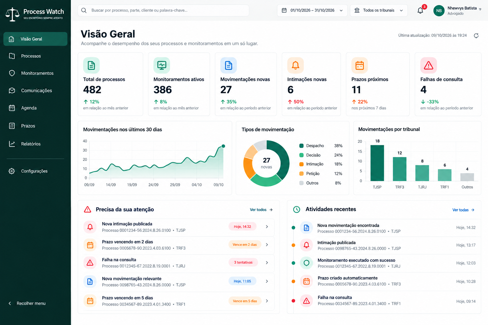
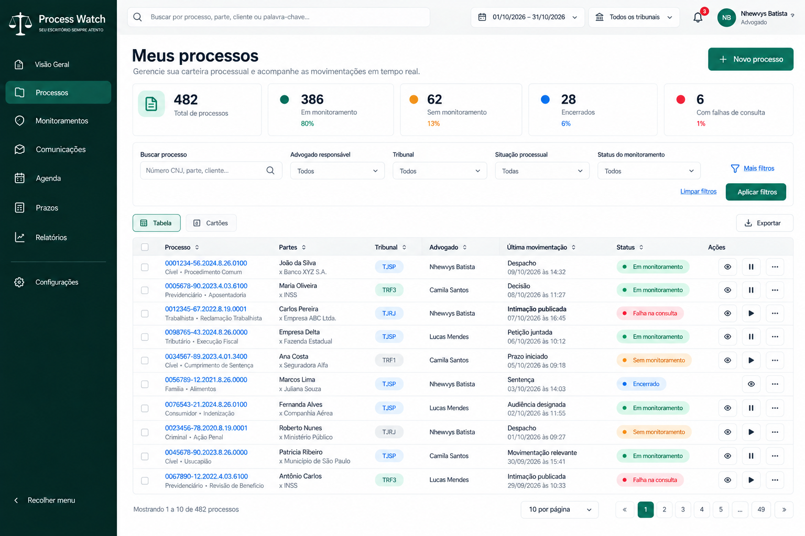
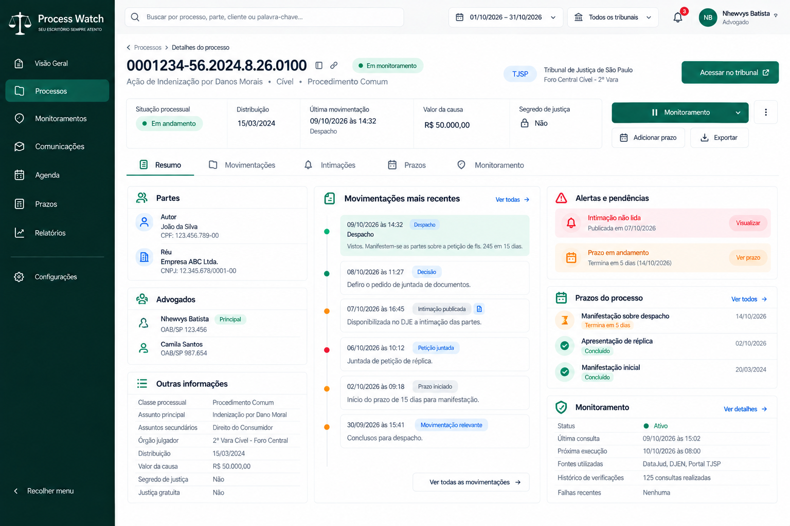
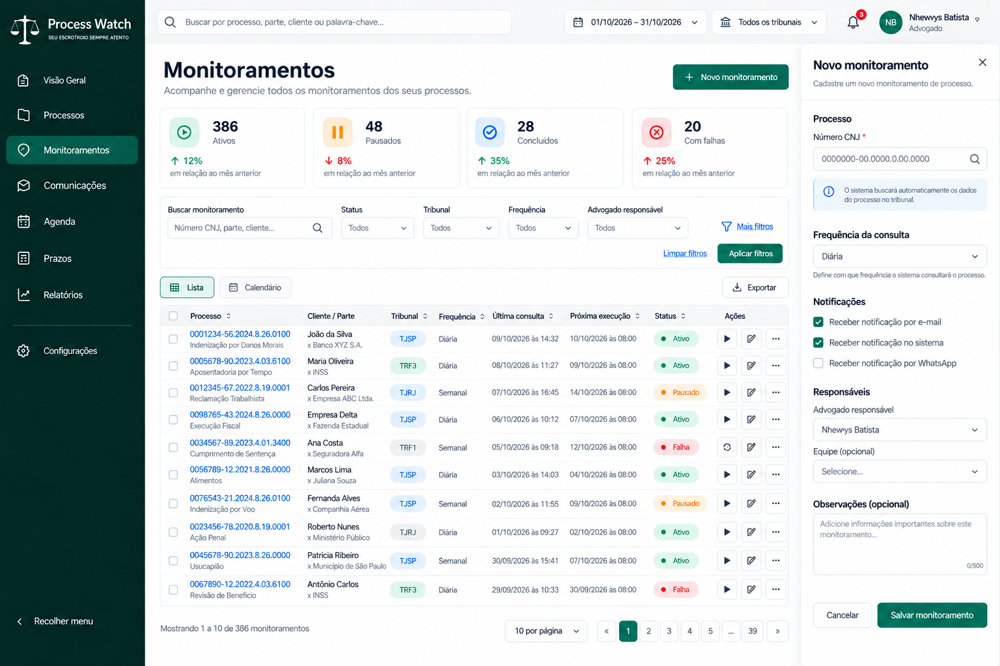
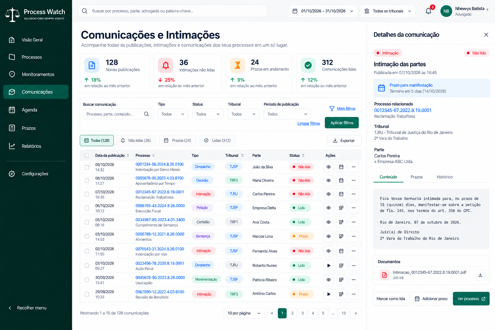
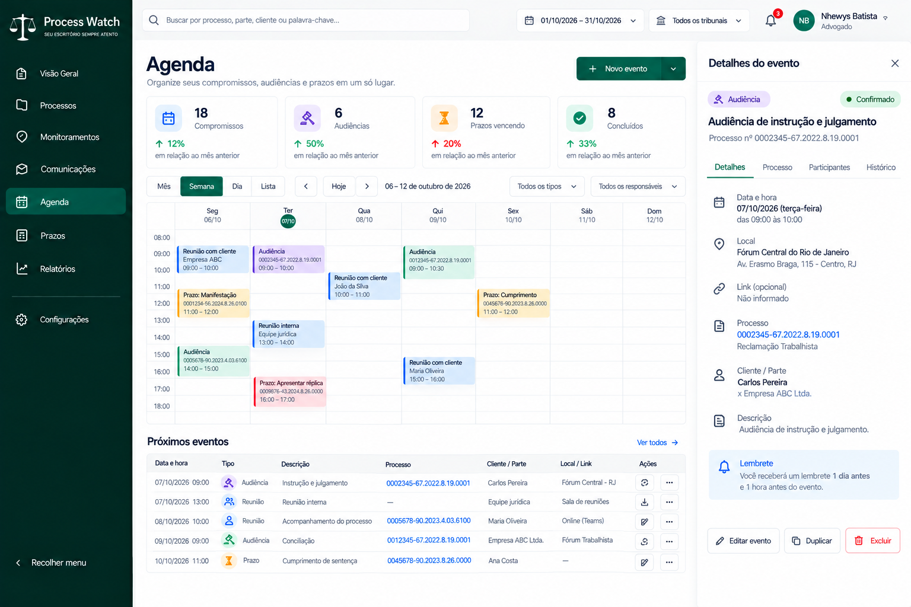
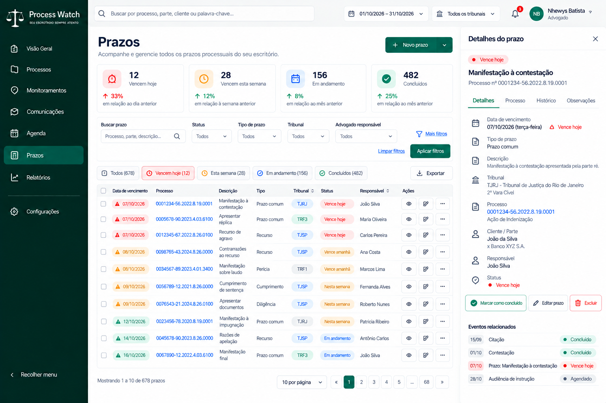
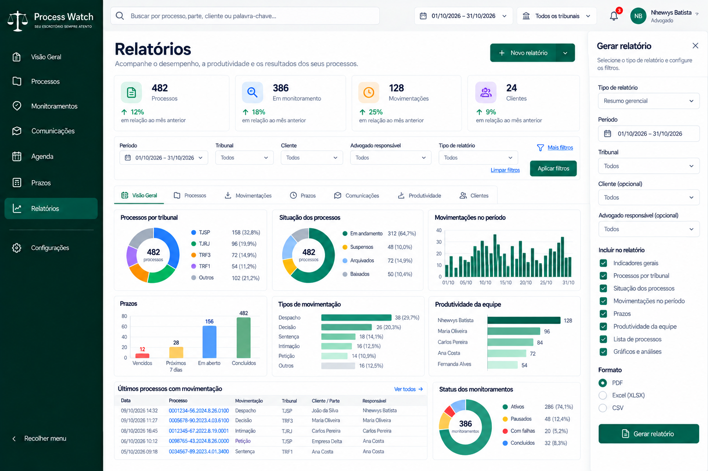
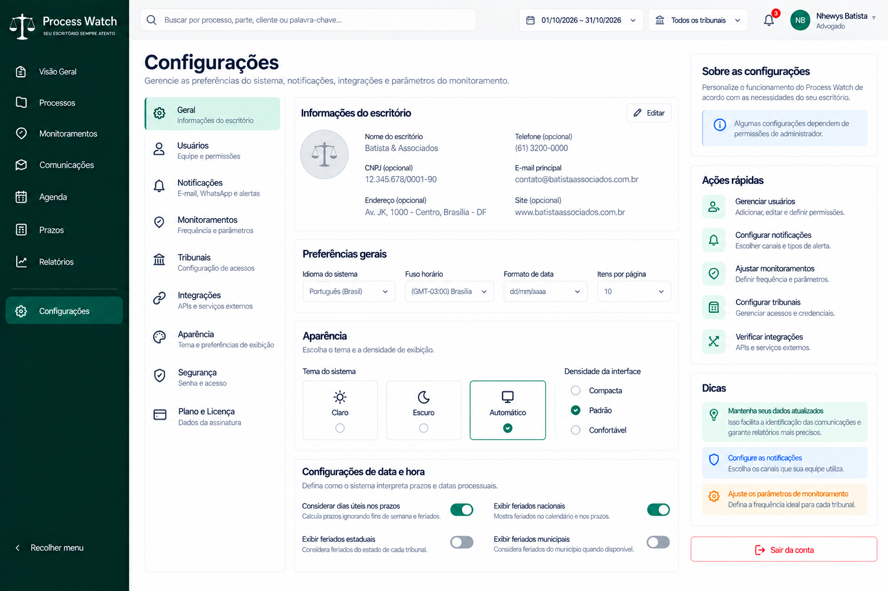

9 TELAS APROVADAS · PROTÓTIPOS VISUAIS
Process Watch — Referência oficial de design
Identidade visual e telas aprovadas para orientar a futura implementação. As imagens contêm dados fictícios; funcionalidades ainda dependem de validação técnica.
Navegação: a tela Meus Processos é a listagem; Detalhes do Processo é acessada ao selecionar um processo. Sidebar expandido em desktop, compacto em tablet e oculto em celular.
01. Visão Geral
Seis indicadores: total de processos, monitoramentos ativos, movimentações novas, intimações novas, prazos próximos e falhas de consulta. Gráficos gerenciais, filtros por período e tribunal, alertas e atividades recentes. Indicadores clicáveis levam a listas filtradas.

02. Meus Processos
Tela inicial ao clicar em Processos no sidebar. Carteira completa em tabela, alternância para cartões, busca por CNJ/parte/cliente, filtros por advogado/tribunal/situação/status, paginação, exportação e ações rápidas. Ao voltar de Detalhes, preservar busca, filtros e página.

03. Detalhes do Processo
Página aberta a partir de um processo selecionado. Cabeçalho com CNJ, tribunal, situação e monitoramento. Abas Resumo, Movimentações, Intimações, Prazos e Monitoramento. Resumo com partes, advogados, histórico recente e alertas; dados técnicos na aba Monitoramento.

04. Monitoramentos
Listagem com status, tribunal, frequência, última consulta, próxima execução e ações de executar/pausar/retomar/editar. Novo monitoramento abre formulário lateral com CNJ e informações essenciais; opções avançadas condicionadas à capacidade real do motor.

05. Comunicações e Intimações
Tabela com pesquisa, filtros e estados de leitura, painel lateral de conteúdo, documentos, prazos relacionados e acesso ao processo. Leitura interna nunca equivale a ciência jurídica oficial.

06. Agenda Jurídica
Modos mês, semana, dia e lista; audiências, reuniões, compromissos e prazos visualmente diferenciados. Painel de detalhes, vínculo opcional com processo, ações de edição e lembretes conforme recursos implementados.

07. Prazos Processuais
Categorias obrigatórias: Vencidos, Próximos 7 dias, Em aberto, Confirmados, Todos e Descartados. Filtros, tabela, detalhes laterais, histórico, responsável e ações. Identificar origem manual/automática e conferência jurídica; não presumir cálculo validado.

08. Relatórios
Indicadores e gráficos de processos, tribunais, movimentações, prazos, comunicações e produtividade. Filtros por período, tribunal, cliente e advogado; geração e exportação PDF/XLSX/CSV como capacidade planejada a confirmar.

09. Configurações
Seções de Geral, Escritório, Usuários/Advogados, Notificações, Monitoramentos, Tribunais, Integrações, Aparência e Segurança. Parâmetros avançados separados; administração global da plataforma em produto/painel distinto.
